An index is a data structure designed for efficient search through large databases. Without an index, finding a specific tuple in a relation with millions of rows would require scanning through the entire relation — a process that, even with fast sequential I/O, can take tens of seconds. Indexes allow us to locate specific tuples in milliseconds.
There are two key ideas behind indexing. First, records can be mapped to disk blocks in specific ways — sorted by some attribute, or organized by a hash function. Second, auxiliary data structures can be maintained alongside the data that allow quick lookup of specific records.
A search key is the attribute (or set of attributes) used to look up records in an index. For example, in a persons table, the SSN might serve as a search key. Note that a search key is not the same as a primary key — any attribute can serve as a search key for an index.
There are two broad categories of indexes:
Ordered indexes, which rely on sorting the search keys in some fashion.
Hash-based indexes, which use a hash function to map search keys to locations.
We will examine both types, starting with ordered indexes and the B+-tree, then moving to log-structured merge trees (a modern alternative), and finally covering hash indexes and several other index types.
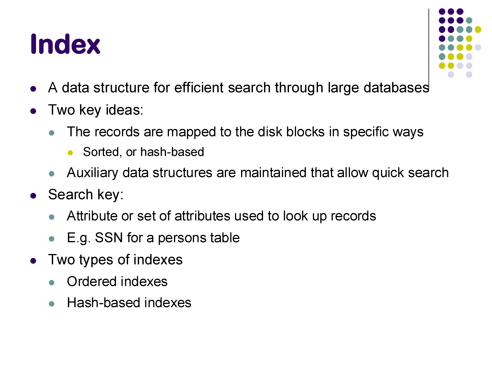
Index basics
2. Primary vs Secondary Indexes; Sparse vs Dense
One of the first important distinctions is between primary and secondary indexes.
A primary index is an index built on the attribute by which the relation is physically sorted. For example, consider the instructor relation sorted by instructor ID. A primary index on ID can be sparse — it does not need to contain an entry for every single tuple. Instead, it only needs enough entries to direct you to the right disk block. For instance, if the index contains keys 10101, 32343, and 76766, and you are looking for instructor 12121, you can see from the index that 12121 falls between 10101 and 32343, so you follow the pointer for 10101 and then scan through that block. You have to imagine that in practice there might be a million tuples here, not ten, so the jumps that the index allows are substantial.
A secondary index is built on an attribute by which the relation is not sorted. For example, an index on salary when the relation is sorted by ID. In this case, the pointers from the index into the relation are “all over the place” — looking up salary 40000 takes you to one location, salary 80000 to somewhere completely different, and so on. This creates a random access pattern that can be very expensive.
A secondary index must be dense — every single value of the search key must be present in the index, because without the underlying sort order, there is no way to infer where missing values might be.
An important practical note: secondary indexes must be used with care. The random access pattern they create can be so expensive that in many cases it is actually faster to simply scan the entire relation sequentially rather than follow a secondary index. A sequential scan, even though it reads more data, avoids the costly random I/O that a secondary index requires.
Note that a secondary index is still an ordered index — the index itself is sorted by the search key. It is the pointers from the index to the relation that jump around randomly.
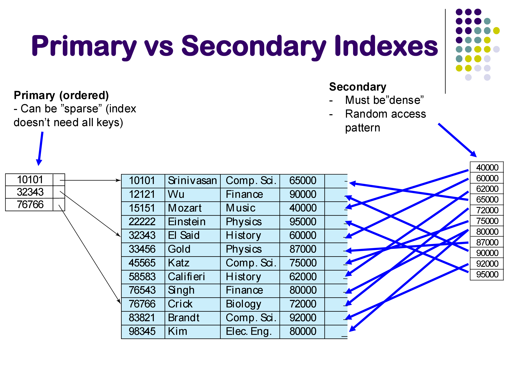
Primary vs Secondary Indexes
3. Multi-Level Indexes
What happens when the index itself becomes very large? Consider a relation with one billion tuples. If each disk block can hold 100 tuples, the relation occupies 10 million blocks. An index with one entry per block would itself be 10 million entries — far too large to search efficiently without additional help.
The solution is to build an index on top of the index. This creates a multi-level index structure: an outer (higher-level) index that helps you navigate quickly through the inner (lower-level) index, which in turn points to the actual data blocks. This idea of hierarchical indexing naturally leads to tree-structured indexes, the most important of which is the B+-tree.
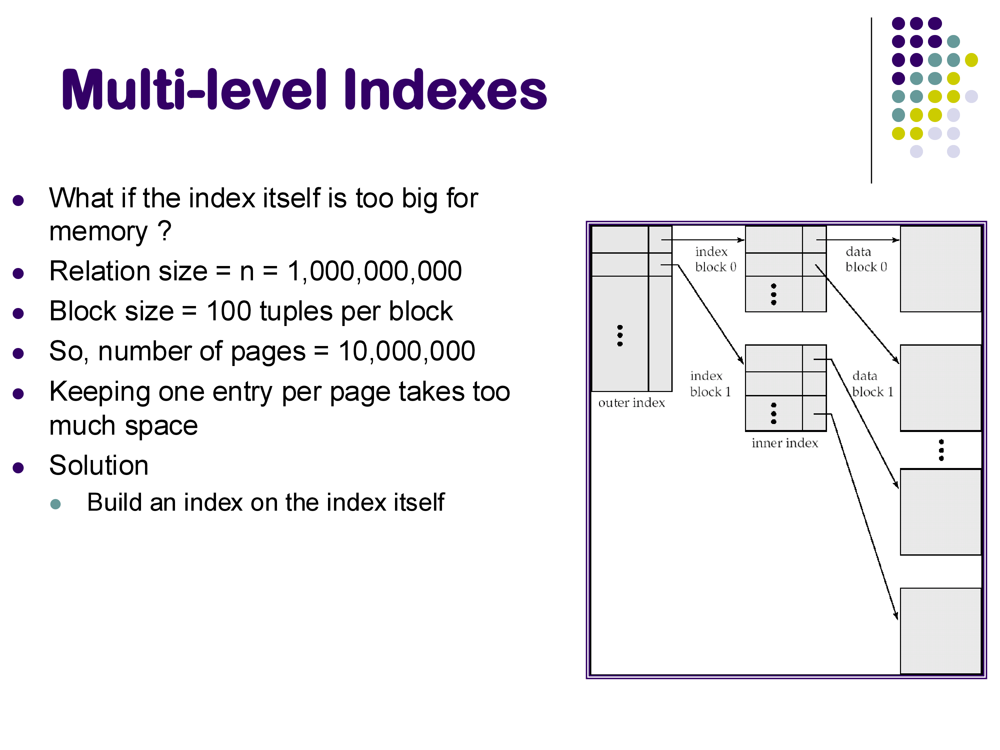
Multi-level Indexes
4. B+-Tree Indexes
4.1 Structure
The B+-tree is the most widely used index structure in database systems. It is a balanced tree with three types of nodes: leaf nodes at the bottom, interior nodes in the middle, and a single root node at the top. Each node in the tree corresponds to exactly one disk block.
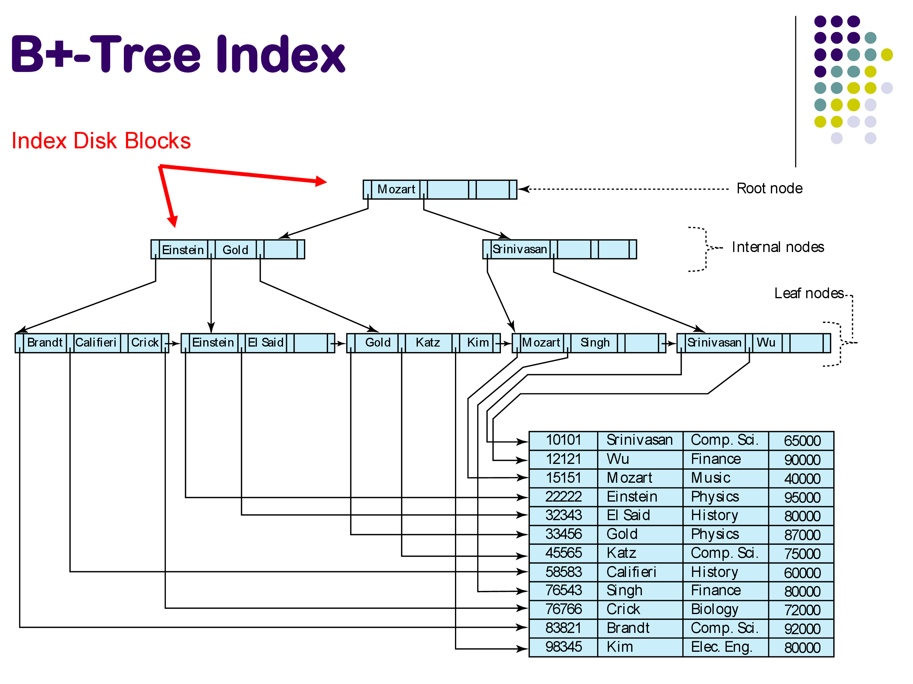
B+-Tree Index structure
The leaf nodes contain the actual search keys along with pointers to the corresponding tuples in the relation. Importantly, the leaf nodes are linked together from left to right in sorted order. This chain of leaf nodes is what makes range queries efficient — once you find the starting point, you can simply follow the chain to retrieve all tuples in the range.
The interior nodes serve a single purpose: to direct traffic during searches. Each interior node contains search keys and pointers to child nodes. When searching for a key, you compare it against the keys in the interior node to decide which pointer to follow — left, right, or somewhere in between.
The root node is the entry point for all searches.
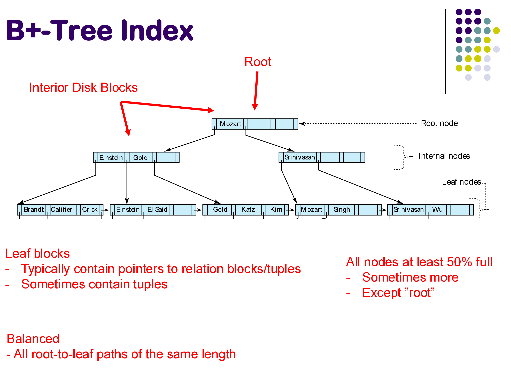
B+-Tree properties
Several important properties define B+-trees:
Balanced. All paths from the root to any leaf node have the same length. Unlike AVL trees or red-black trees, which can have slightly uneven paths, B+-trees guarantee perfect balance.
At least 50% full. Every node (except the root) must be at least 50% full. This property balances two competing concerns: if nodes are too empty, we waste space and fetch large disk blocks only to find most of the data is missing; if nodes are too full, maintaining the tree during insertions becomes complicated. The sweet spot is typically 50-66% occupancy. Note that “50% full” refers to the number of pointers in a node, not the number of keys.
4.2 Searching
Searching a B+-tree is logarithmic in the number of entries, but the base of the logarithm is much larger than 2. Specifically, the height of the tree is approximately logB/2(N), where B is the maximum number of entries per node (also called the order of the tree) and N is the total number of entries.
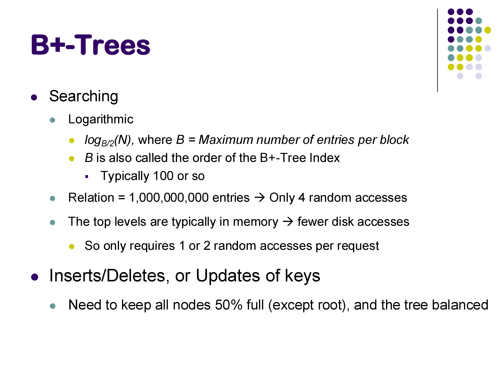
B+-Tree searching
In practice, B is typically around 100 to 200, because a single disk block can hold that many key-pointer pairs. This large branching factor is the key advantage of B+-trees over binary search trees: at each level, instead of choosing between 2 children, you choose among 100-200 children. This means the tree grows very slowly in height. A B+-tree over one billion entries with B=200 would have a height of only about 4 — meaning you need at most 4 random disk accesses to find any tuple.
Moreover, in practice the situation is even better. The top levels of the tree (root and one or two levels below) are typically cached in memory because they are accessed so frequently. This means that a search often requires only 1 or 2 actual disk accesses — one to read the appropriate leaf node, and one to fetch the actual tuple from the relation.
For range queries (e.g., find all instructors with names between “Einstein” and “Kim”), you first navigate down the tree to find the left endpoint (“Einstein”), and then follow the chain of leaf node pointers to traverse through all matching entries. At each leaf node, you follow the pointers to retrieve the actual tuples from the relation.
As a concrete example, suppose you are searching for “Srinivasan” in the B+-tree shown above. Starting at the root, you see the key “Mozart.” Since “Srinivasan” comes after “Mozart,” you follow the right pointer. At the next level, you see “Srinivasan” — following the convention of taking the right pointer on equality, you arrive at the leaf node containing “Srinivasan” and “Wu.” You then follow the pointer from “Srinivasan” to retrieve the actual tuple from the relation.
4.3 Insertion
Inserting a new entry into a B+-tree starts by finding the leaf node where the entry should go. If there is space in that leaf node, the entry is simply added and we are done.
The interesting case arises when the target leaf node is full. In this case, the leaf must be split into two nodes, and a key must be propagated up to the parent to account for the new child. If the parent is also full, it too must be split, with a key propagated further up. In the worst case, this splitting can cascade all the way to the root, potentially creating a new root and increasing the height of the tree by one.
However, most modifications tend to be local — they involve only the target leaf node and its immediate parent.
Example: Inserting “Adams.” The entry for “Adams” should go in the leftmost leaf node (which contains “Brandt” and “Califieri” and “Crick”). Since this node is full, it is split into two: one containing “Adams” and “Brandt,” and another containing “Califieri” and “Crick.” The key “Califieri” is propagated up to the parent interior node, which now contains “Califieri,” “Einstein,” and “Gold.”
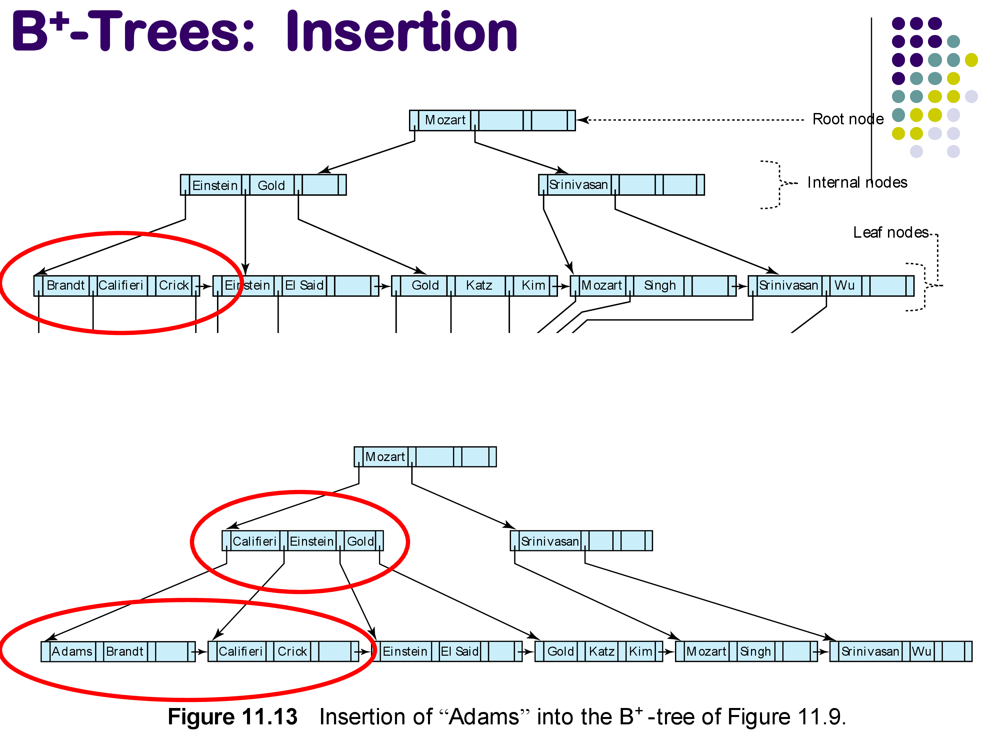
Insertion of “Adams”
Example: Inserting “Lamport.” This is a more complex case. “Lamport” should go between “Kim” and “Mozart” in a leaf node that is already full (containing “Gold,” “Katz,” “Kim”). The leaf is split, and a new key must be propagated up. But the parent interior node is also full, so it too must split. This propagation reaches the root, which must also split, creating a new root with key “Gold” and “Mozart,” thereby increasing the height of the tree by one.
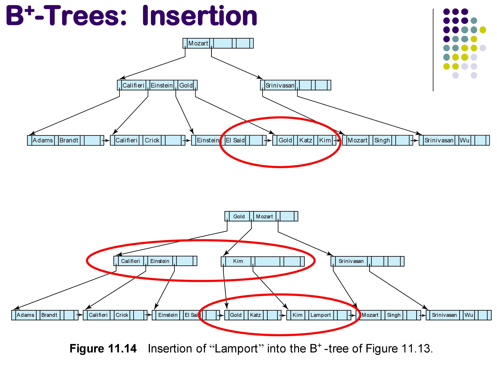
Insertion of “Lamport”
4.4 Deletion
Deletion from a B+-tree begins by finding and removing the entry from the appropriate leaf node.
Simple case. If deleting an entry (like “Katz”) leaves the leaf node with enough entries to remain at least 50% full, nothing else needs to happen — the entry is simply removed.
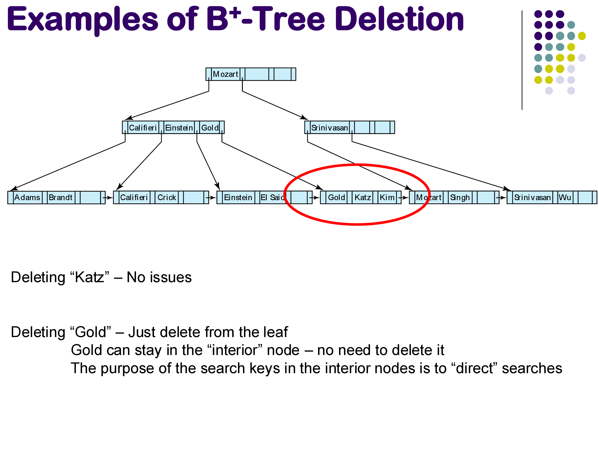
B+-Tree deletion examples
Interior node keys need not be updated. A common misconception is that if a deleted key also appears in an interior node, that interior node must be updated. This is not necessary. The search keys in interior nodes exist solely to direct traffic during searches — there is no requirement that they correspond to keys that actually exist in the relation. For example, if “Gold” is deleted from the leaf but still appears in an interior node, that is perfectly fine. Someone searching for “Gold” will be directed to the right area and simply discover that it does not exist, which is the correct answer. Updating the interior node would be expensive and provides no benefit.
Underfull nodes (textbook answer). If a deletion causes a leaf node to become underfull (less than 50% full), the textbook algorithm calls for redistributing entries from a sibling node. For instance, if deleting both “Singh” and “Wu” leaves a leaf with only “Mozart,” you would borrow “Kim” from the neighboring leaf to restore balance.
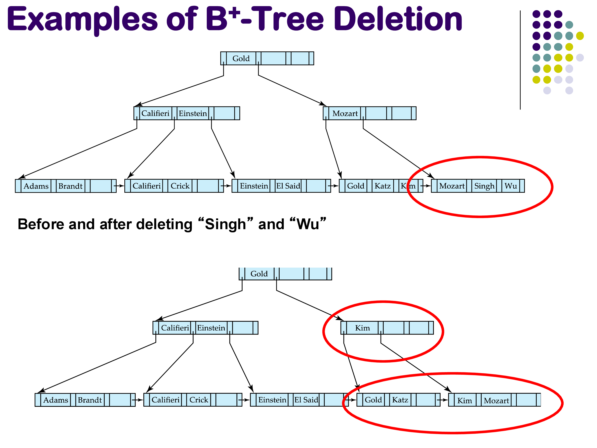
Deletion causing underfull — redistribution
Practical reality. In most real implementations, underfull nodes are simply left as-is. Inserts are more common than deletes in typical database workloads, so something will likely be inserted into the underfull node soon. The cost of redistributing is rarely worth the effort, especially since the redistribution can cascade — if you borrow from a sibling, the sibling might become underfull, requiring further redistribution.
Extreme case: tree height reduction. In rare cases, deletion can cause enough nodes to become empty that the tree’s height decreases. The example below shows a case where deleting “Gold” ultimately causes the root to be merged with its children, reducing the tree height by one. Again, practical implementations would typically not bother with this.
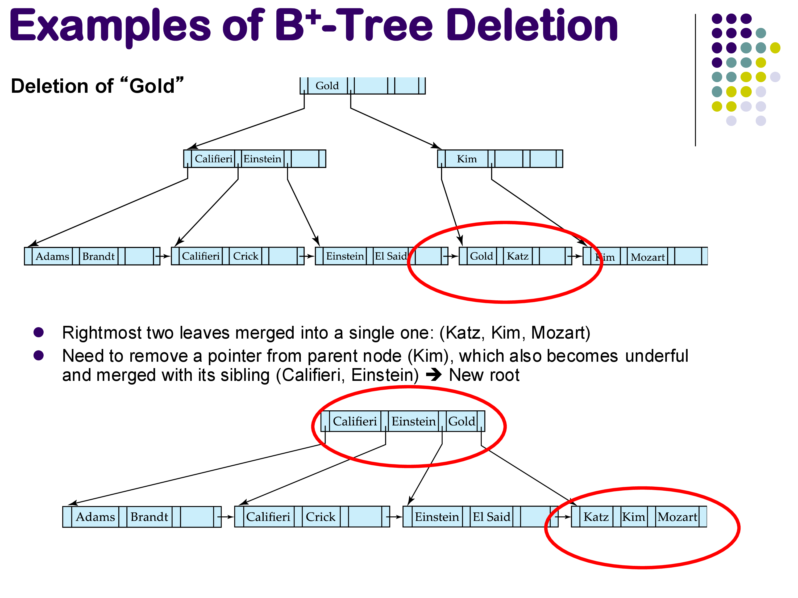
Deletion reducing tree height
4.5 B+-Trees: Summary
The main benefit of B+-trees is dramatic: they reduce the number of disk block accesses needed to find a specific tuple from potentially millions (in a sequential scan) to just a handful. Consider a relation occupying 1,000,000 blocks (about 4 GB with 4 KB blocks). A sequential scan at 200 MB/s would take about 20 seconds. A B+-tree lookup would require only 4-5 random accesses, taking roughly 40-50 milliseconds — hundreds of times faster.
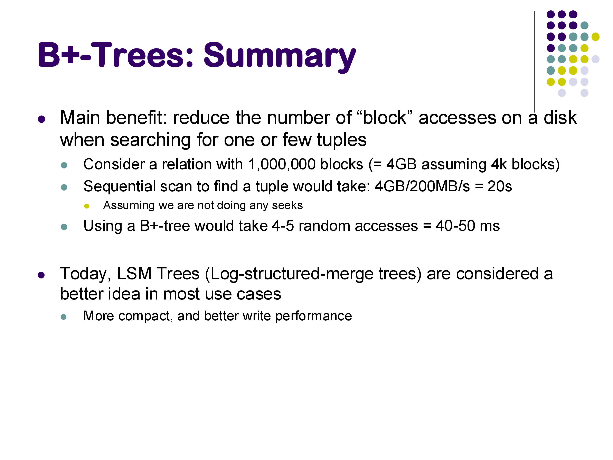
B+-Trees Summary
B+-trees have been the mainstay of database indexing for over 40 years, since they were first proposed in the late 1970s. PostgreSQL, MySQL, SQL Server, and most other established database systems use B+-trees as their primary index structure.
However, B+-trees are no longer considered the best choice for new systems. The fundamental issue is that B+-tree maintenance requires in-place random updates — modifying individual blocks scattered across the disk. As we will see next, log-structured merge trees (LSM trees) avoid this problem entirely, making them the preferred choice for most modern database systems.
5. Log-Structured Merge Trees (LSM Trees)
5.1 Motivation
Although LSM trees were proposed quite some time ago, their widespread adoption in databases is more recent. Today, a large number of modern database systems use some variation of LSM trees, including RocksDB (developed by Facebook), LevelDB (developed by Google), Cassandra, InfluxDB, and Bigtable.
This topic is not well covered in most database textbooks, so it deserves particular attention.
The key insight motivating LSM trees is that traditional indexes like B+-trees and hash indexes require in-place random updates. When you insert or delete an entry, you must update specific blocks scattered across the disk. As the gap between random and sequential I/O performance has grown, this has become increasingly problematic. The problem is even worse for SSDs: while SSDs are excellent at random reads, they perform poorly on small random writes due to the erase-before-write requirement of NAND flash.
If you look at a B+-tree insertion, you might end up updating a leaf block here, a parent block there, and potentially several more blocks scattered across the disk. Each of these is a separate random write. LSM trees are designed to avoid this entirely.
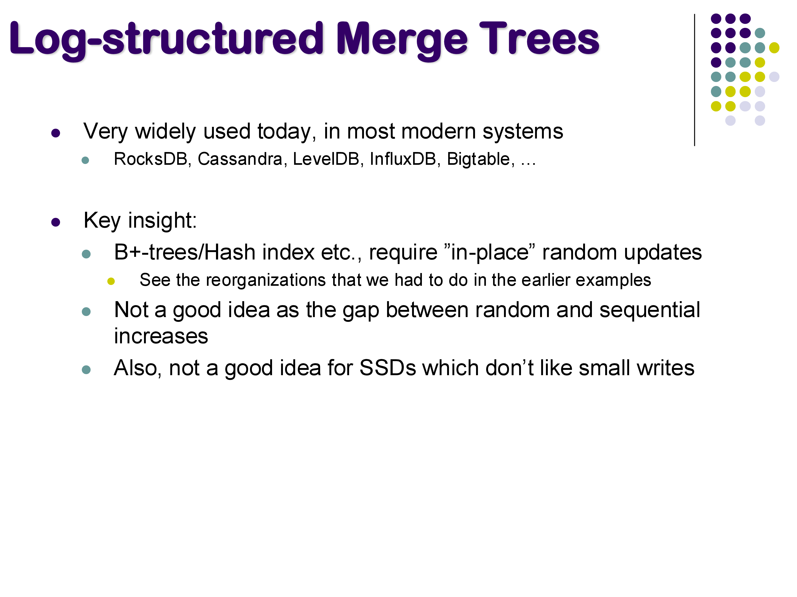
LSM Trees — motivation
5.2 The SSTable (Sorted String Table)
The core data structure in an LSM tree is the SSTable (Sorted String Table). Despite the name “table,” it is simply a sorted list of key-value pairs. The keys are the search keys (e.g., instructor ID), and the values are the remaining attributes of each tuple.
In an LSM tree, the active SSTable lives in memory. It can grow quite large — potentially gigabytes. Because it is in memory, an in-memory index structure (such as a skip list, red-black tree, or even a small B+-tree) is maintained on top of it to enable fast lookups. This in-memory index is not persisted to disk — if the system crashes, it can be rebuilt.
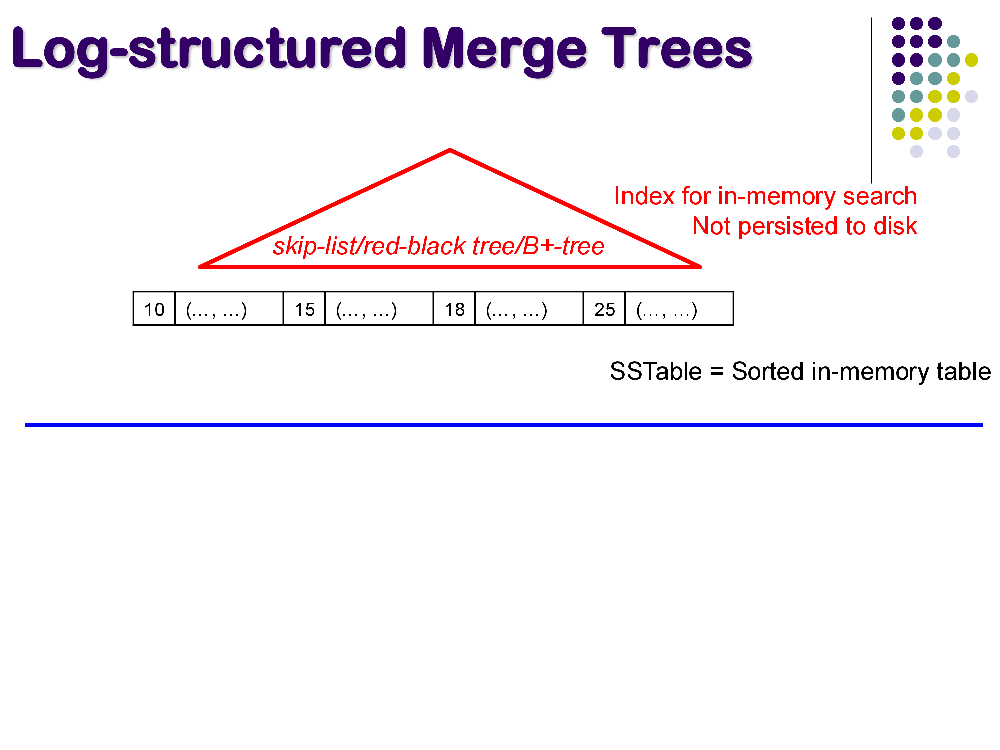
SSTable in memory
When a new tuple arrives — say with key 17 — it is simply inserted into the in-memory SSTable in its correct sorted position. This is extremely fast because it involves no disk I/O at all.
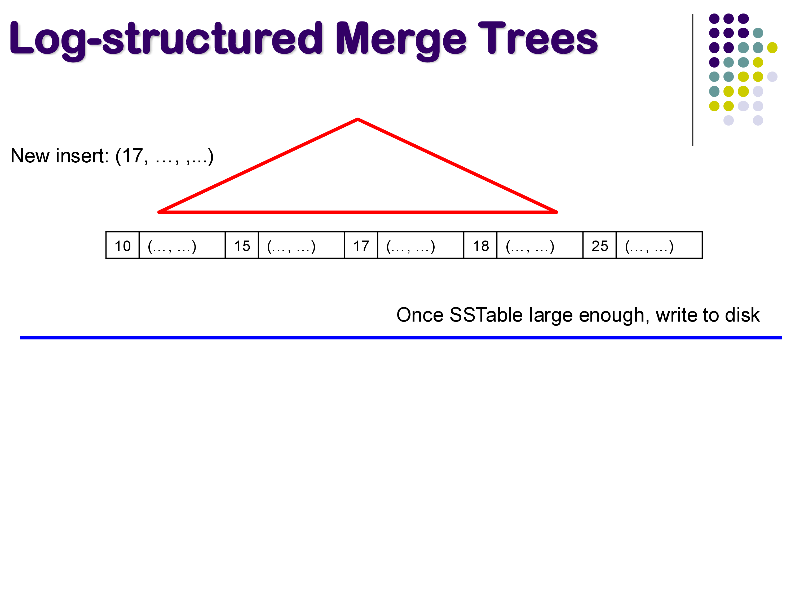
Inserting into SSTable
5.3 Flushing to Disk
At some point, the in-memory SSTable becomes too large (perhaps exceeding a configured threshold of 1 or 5 GB). When this happens, the entire SSTable is written to disk as a single, contiguous, immutable file, and a new empty SSTable is started in memory.
Over time, this process produces a series of SSTables on disk, each timestamped with when it was written. For example, you might have an SSTable written at 6:15 AM, another at 9:15 AM, and another at 10:00 AM.
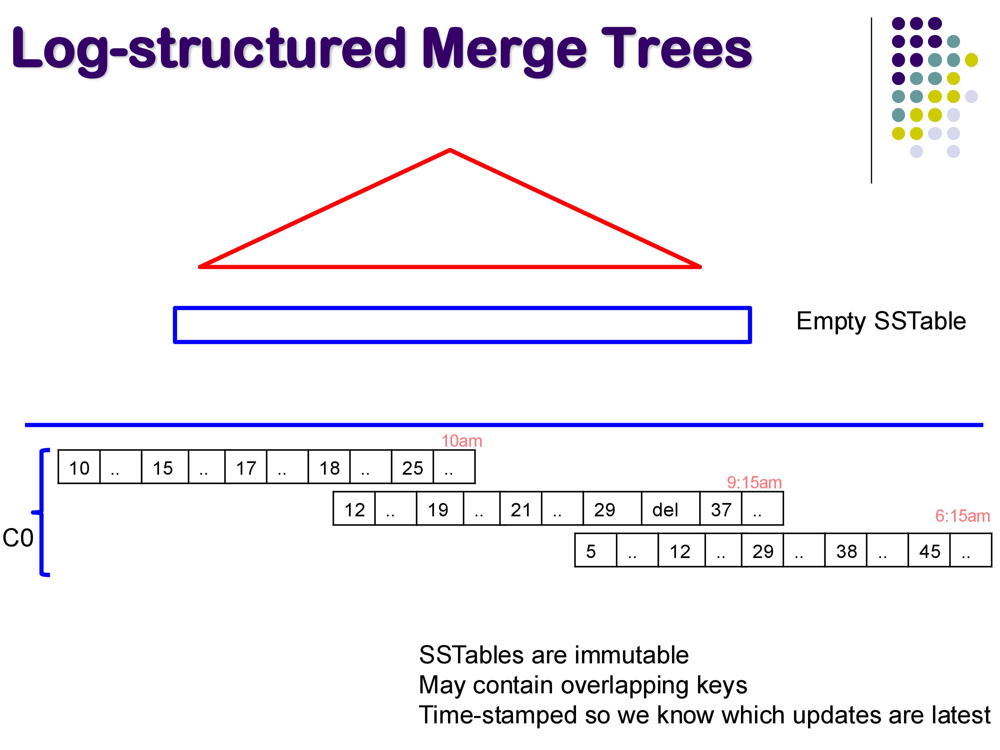
SSTables on disk
Several important properties of on-disk SSTables:
Immutable. Once written to disk, an SSTable is never modified. This is a fundamental design choice that makes writes extremely efficient — they are always large sequential writes.
Overlapping keys. Different SSTables on disk may contain entries for the same key. For example, key 12 might appear in both the 6:15 AM and 10:00 AM SSTables. The timestamp determines which entry is current — the most recent SSTable always has the authoritative version.
Tombstones. When a tuple is deleted, a special tombstone marker is recorded in the current in-memory SSTable. This is necessary because the deleted key might exist in older SSTables on disk, and we need to record the fact that it was deleted. The tombstone effectively says “this key was deleted at this time.”
Updates are handled simply by inserting the new version of the tuple into the in-memory SSTable. The older version in a previous SSTable becomes superseded.
5.4 Compaction
Over time, the number of SSTables on disk grows, and many of them contain overlapping or outdated entries. Compaction is the process of periodically merging multiple SSTables into fewer, larger ones.
Since each SSTable is already sorted, compaction is essentially a sort-merge operation — a very efficient process. During compaction, duplicate keys are resolved (keeping only the most recent version), tombstones are applied (removing deleted keys), and space is reclaimed.
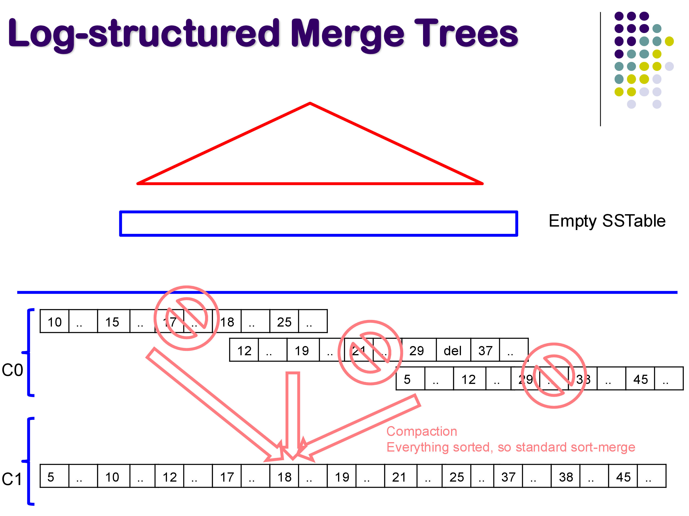
Compaction — sort-merge
Compaction creates a hierarchical structure of levels. Level 0 (called C0) contains the freshly flushed SSTables. When enough Level 0 tables accumulate, they are compacted into a Level 1 (C1) table. When enough Level 1 tables accumulate, they are compacted into Level 2, and so on. Each level contains fewer but larger files.
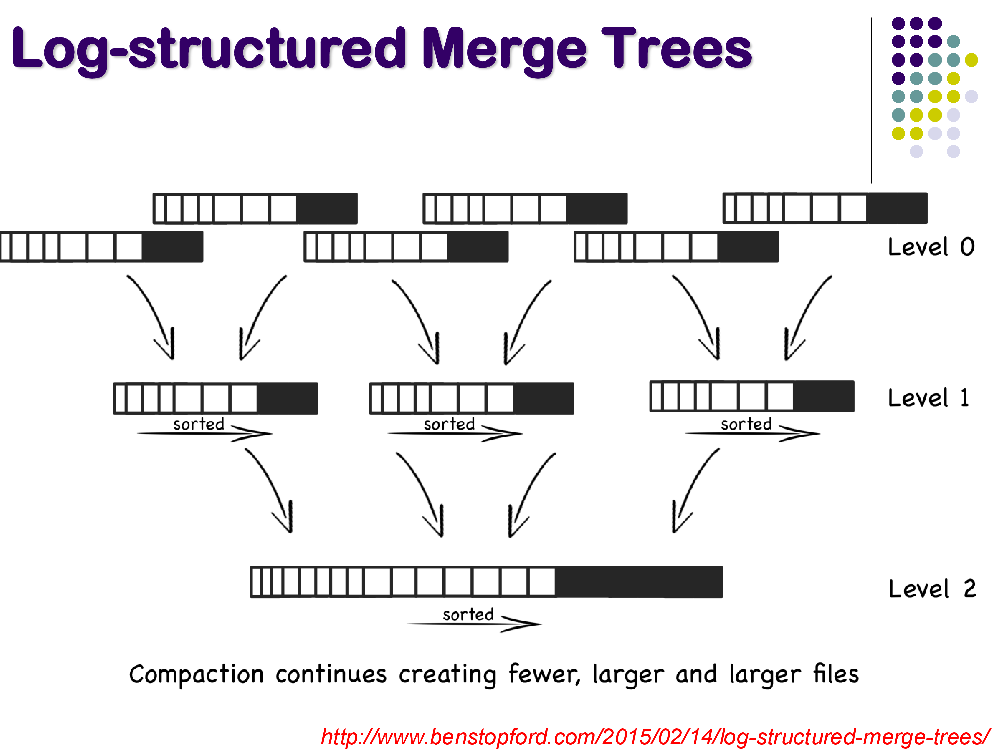
Multi-level compaction
5.5 Searching
To search for a key in an LSM tree, you first check the in-memory SSTable, since it contains the most recent data. If the key is found there, you are done.
If the key is not in memory, you must search the on-disk SSTables. The challenge is that the key could be in any of them — you don’t know which one without looking. Naively, you might have to search through many SSTables, which would be slow.
To address this, LSM trees use bloom filters — probabilistic data structures that can quickly tell you whether a given SSTable might contain a particular key. A bloom filter can definitively say “this key is NOT in this SSTable” (no false negatives), but might occasionally say “this key MIGHT be in this SSTable” when it actually is not (false positives). This allows the system to skip most SSTables during a search, checking only those that the bloom filter identifies as potential matches.
5.6 Benefits and Drawbacks
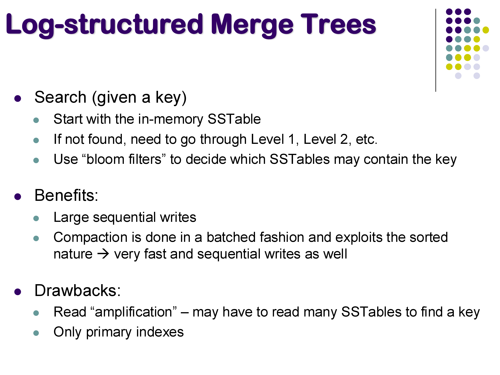
LSM Trees — search, benefits, drawbacks
Benefits. LSM trees excel at write performance. All writes go to the in-memory SSTable (fast) and are eventually flushed as large sequential writes (efficient for both HDDs and SSDs). Compaction is also done as large sequential operations. This makes LSM trees ideal for write-heavy workloads and SSD-based storage.
Drawbacks. The main drawback is read amplification: finding a key may require checking the in-memory SSTable and then multiple on-disk SSTables, each of which might be a separate disk access. While bloom filters mitigate this, reads are generally slower than in a B+-tree, where a single traversal from root to leaf suffices. Additionally, LSM trees can only support primary indexes — the data within each SSTable is sorted by the search key, so there can only be one sort order.
6. Hash Indexes
Hash-based indexing uses a hash function to map search key values to bucket numbers. Each bucket corresponds to one disk block (or a chain of blocks if overflow occurs). To find a record, you compute the hash of the search key, go directly to the corresponding bucket, and look for the record there.
When a bucket becomes full, additional records are placed in overflow pages — extra blocks linked to the original bucket in a chain. This scheme is called closed hashing (or overflow chaining). An alternative called open hashing exists but is not suitable for database applications.
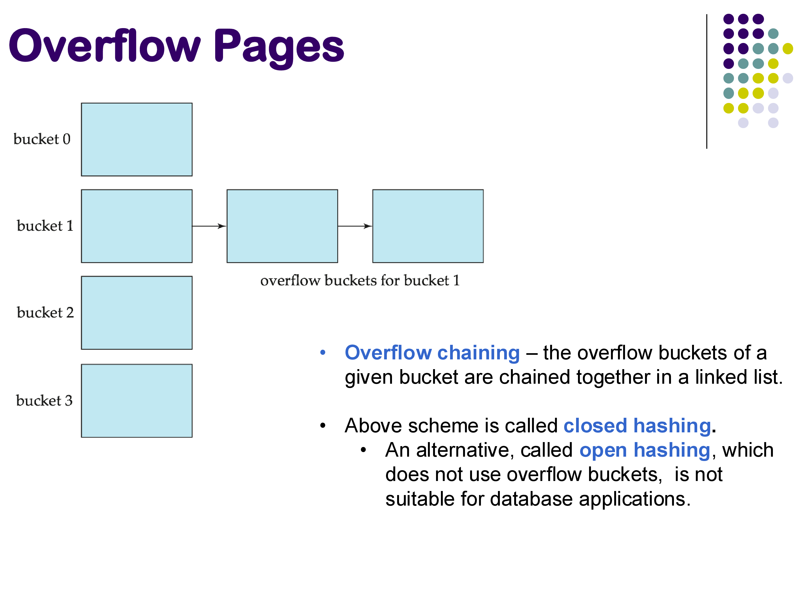
Overflow pages and closed hashing
The hash function should produce a uniform distribution of keys across buckets to avoid some buckets overflowing while others remain nearly empty. Designing good hash functions is a significant topic in itself.
Hash indexes can be built as a separate data structure alongside the relation (similar to how B+-trees work). The index contains hash buckets, and each bucket entry stores the search key value and a pointer to the corresponding tuple in the relation.
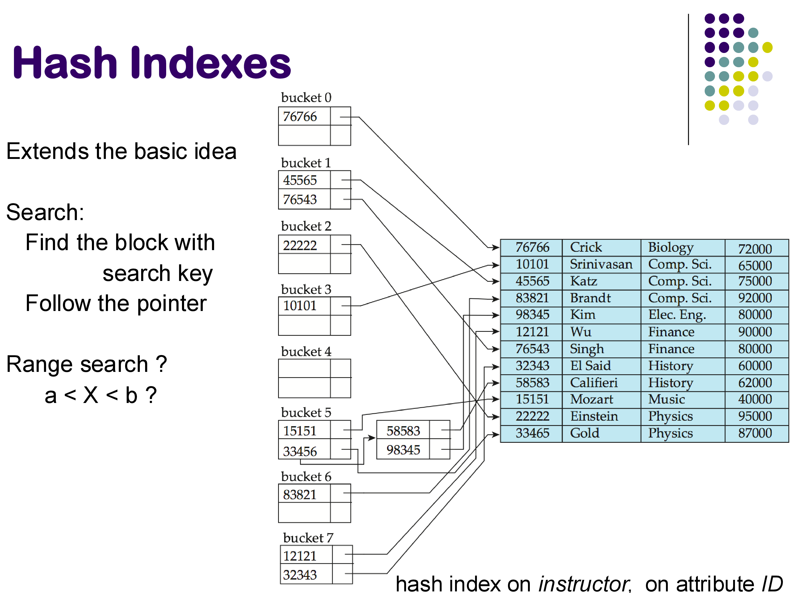
Hash index on instructor ID
Strengths and Limitations
Hash indexes are extremely fast for equality searches: compute the hash, go to the bucket, find the record. This is typically a single disk access (or two if there are overflow pages).
However, hash indexes cannot support range queries at all. If you want to find all instructors with IDs between 10,000 and 20,000, there is no efficient way to do this with a hash index — literally the only approach would be to hash 10,000, then 10,001, then 10,002, and so on, which is clearly impractical. In contrast, a B+-tree handles this effortlessly by navigating to the left endpoint and following the leaf chain.
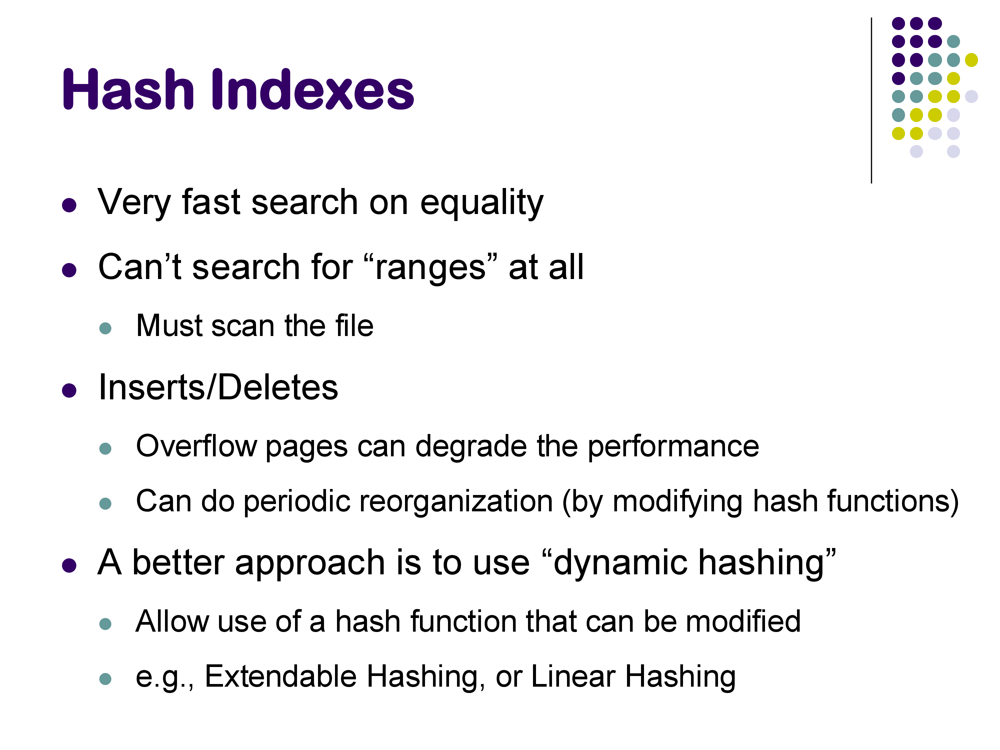
Hash index properties
Because range queries are so common in databases (queries with BETWEEN, <, >, <=, >=), hash indexes are rarely used for on-disk storage in database systems. B+-trees (or LSM trees) are almost always preferred because they support both equality and range queries.
However, hashing is extremely widely used in memory during query processing. It is the foundation of hash joins, one of the most important join algorithms. In distributed systems, hashing is used to distribute data across machines — for example, MongoDB uses hashing to partition data across servers, because hashing provides a more uniform distribution than range-based partitioning.
There also exist dynamic hashing schemes (such as extendable hashing and linear hashing) that allow the number of buckets to grow and shrink as the data changes, avoiding the need to choose a fixed number of buckets up front.
7. Additional Index Topics
7.1 Multiple-Key Access and Index-ANDing
Queries often involve conditions on multiple attributes. Consider:
If you have separate indexes on dept_name and salary, there are several strategies:
Option 1: Use the dept_name index to find all instructors in Finance, then check each one to see if their salary is 80,000.
Option 2: Use the salary index to find all instructors earning 80,000, then check each one to see if they are in the Finance department.
Option 3: Index-ANDing. Use the dept_name index to get a list of pointers to all Finance instructors (without actually following them). Similarly, use the salary index to get a list of pointers to all instructors earning 80,000. Then intersect the two pointer lists. Only follow the pointers that appear in both lists.
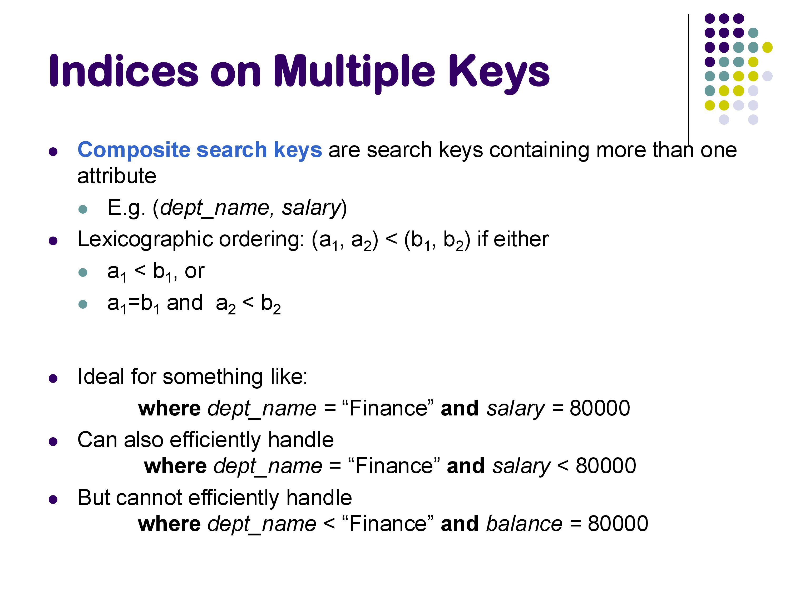
Multiple-key access strategies
Index-ANDing can be dramatically more efficient than the other options. If a million tuples satisfy the department condition and a million satisfy the salary condition, but only 100 satisfy both, then Options 1 and 2 would each retrieve a million tuples only to discard most of them. Index-ANDing retrieves the two pointer lists, intersects them to get 100 pointers, and then follows only those 100 pointers. This technique is useful enough that it has its own name and is implemented in many database systems.
7.2 Composite Search Keys
Instead of building separate indexes and using index-ANDing, you can build a single index on multiple attributes together. For example, a composite index on (dept_name, salary) uses lexicographic ordering: the pair (a1, a2) < (b1, b2) if a1 < b1, or if a1 = b1 and a2 < b2.
This is ideal for queries like:
WHERE dept_name = 'Finance' AND salary = 80000 — can look up the exact composite key
WHERE dept_name = 'Finance' AND salary < 80000 — can find “Finance” and then scan within that range
However, it does not work well for:
WHERE dept_name < 'Finance' AND salary = 80000 — the salary condition cannot be efficiently used because salary is the second component
No new data structure is required — you simply use a B+-tree with concatenated keys. Whether to build composite indexes depends on the actual query workload: they are very effective for common multi-attribute queries but add storage overhead and maintenance cost.
7.3 Bitmap Indexes
Bitmap indexes are a specialized index type that is heavily used in data warehouses (systems like Snowflake, Amazon Redshift, and similar analytical databases) but not in transactional databases like PostgreSQL.
The idea is simple. For each distinct value of an attribute, maintain a bitmap — a bit vector with one bit per record in the relation. If the i-th record has that attribute value, the i-th bit is 1; otherwise, it is 0.
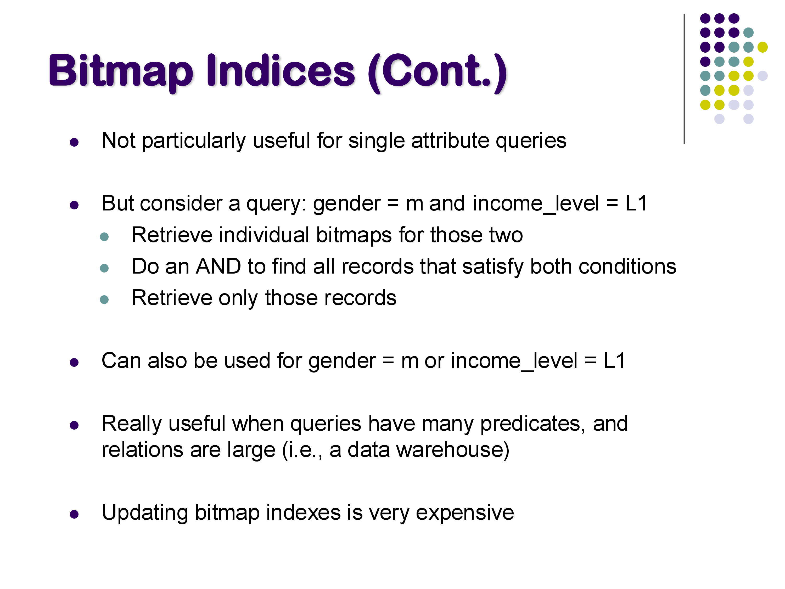
Bitmap index example
For example, consider an attribute gender with values {m, f} and an attribute income_level with values {L1, L2, L3, L4, L5}. The bitmap for gender = m might be 10010, indicating that records 0 and 3 are male. The bitmap for gender = f would be 01101.
The power of bitmap indexes becomes clear with multi-predicate queries. To find all female instructors at income level L3, you take the bitmap for gender = f (01101) and AND it with the bitmap for income_level = L3 (00001). The result (00001) tells you that only record 4 satisfies both conditions — without ever looking at the actual data. For COUNT queries, you don’t even need to follow any pointers; the bitmap tells you the answer directly.
Bitmap indexes are excellent for attributes with a small number of distinct values (low cardinality) and for workloads dominated by analytical queries that combine conditions on multiple attributes. However, updating bitmap indexes is very expensive — inserting or deleting a single tuple requires modifying every bitmap for every indexed attribute. This is why bitmap indexes are only practical for read-mostly data warehouses where data is loaded in batches, not for OLTP systems with frequent updates.
7.4 Spatial Indexes and R-Trees
When data has a spatial component — geographical coordinates, bounding rectangles, polygons, or higher-dimensional points — standard B+-trees and hash indexes are not effective. Queries on spatial data typically ask questions like: “Given a point, which rectangles contain it?” or “Find all rectangles that overlap with a given query rectangle.”
R-trees are one of the simplest and most widely used spatial index structures. They are structurally similar to B+-trees, but instead of one-dimensional search keys, each node contains bounding rectangles that enclose the spatial objects in its subtree. During a search, you traverse the tree by checking which bounding rectangles overlap with the query region.
R-trees work well for two-dimensional data but become less effective as the number of dimensions increases. For very high-dimensional data — such as the vector embeddings used in modern machine learning and vector search — different index structures are needed (e.g., approximate nearest-neighbor structures like HNSW). Vector search, which involves finding the closest vectors to a given query vector, is conceptually related to spatial indexing but requires fundamentally different approaches.
Professor Hanan Samet at the University of Maryland is one of the foremost experts in spatial data structures and has written several seminal books on this topic, along with extensive research spanning over 50 years.
8. Summary
The goal of indexing is to quickly find the tuples that satisfy a specific condition, typically without scanning the entire relation.
Equality and range queries are the most common query types in databases, which is why B+-trees have been the predominant on-disk index structure for decades. They support both equality lookups (navigate from root to leaf) and range queries (follow the leaf chain) efficiently.
LSM trees are the preferred choice in most modern database systems, particularly for write-heavy workloads. By converting random writes into sequential writes and using compaction to maintain sorted order, they achieve much better write performance than B+-trees, at the cost of somewhat slower reads (read amplification). Systems like RocksDB, LevelDB, and Cassandra all use LSM trees.
Hash indexes are used primarily for in-memory operations during query processing (especially hash joins) and for data distribution in distributed systems. They are rarely used for on-disk storage because they cannot support range queries.
Bitmap indexes are specialized for analytical and data warehouse workloads where queries combine conditions on multiple low-cardinality attributes and data is updated infrequently.
Beyond these, there is a rich landscape of specialized index structures for different data types and query patterns — spatial indexes (R-trees), full-text indexes, vector indexes for nearest-neighbor search, and many more. Database systems typically support B+-trees (or LSM trees) for general-purpose on-disk indexing, hashing for in-memory operations, and bitmap indexes in analytical systems, while specialized structures are maintained separately as needed.